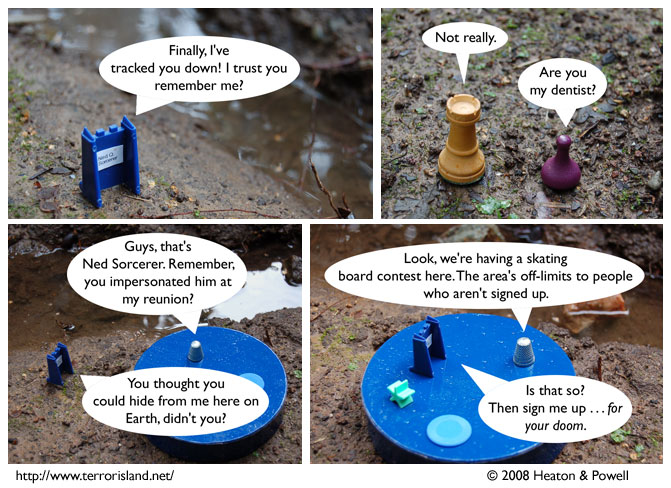

Strip #255
— Monday, January 28, 2008
A New Challenger Approaches!
Notes, Thoughts, &c.
Ben’s Notes
Man, whose idea was it to put two of our bluest characters on a blue background?
Mine? Oh.
Lewis’s Notes
I like the idea that one’s super power can be to imbue other people with a particular piece of knowledge which they can’t quite recall learning, and thus, are constantly trying to place into some sort of context.